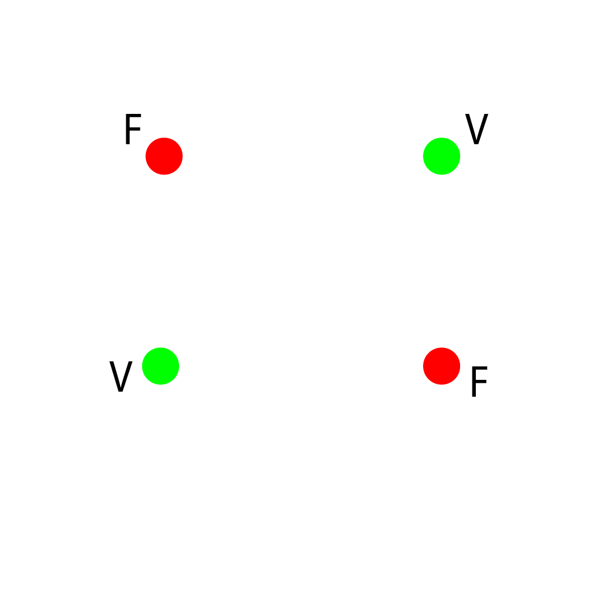

El problema de clasificacion XOR se trata de un problema linealmente no separable. XOR significa "Exclusive OR" o "OR Exclusivo" el cual es una operacion booleana la cual tiene la siguiente tabla de verdad.
| Entradas: | Salidas: |
|---|---|
| V (XOR) V | Falso |
| V (XOR) F | Verdadero |
| F (XOR) V | Verdadero |
| F (XOR) F | Falso |
Podemos ver que existen dos grupos, en un grupo todos son falsos y en otro grupo todos son verdaderos. El problema que se presenta aqui es imposible separar ambos grupos con una sola linea en ciertos casos especiales. Representando los puntos en un plano, se facilita la planteacion de el problema, lo podemos ver en uno de los siguientes casos especiales:

Si intentamos separar los grupos con una sola linea, vemos claramente que es imposible separarlos, es
por eso que se le dice linealmente no separable. Si utilizamos un modelo de redes neuronales para tratar
de resolver el problema, debemos optar por enseñarle nosotros mismos, esto quiere decir que el tipo de
aprendizaje que realizara el modelo, es un aprendizaje supervizado, donde nosotros somos quienes le
decimos a la red neuronal que grupo de valores es correcto y cual es el incorrecto para que el mismo
modelo haga ajustes dado un valor correcto y una prediccion hecha. Ademas, el modelo debe de ser de dos
o mas capas de profundidad, ya que con una sola capa, le es imposible hacer la clasificacion.
La arquitectura de la red quedaria de la siguiente manera:
Ahora para representar el escenario mostrado en la primera imagen, haremos uso de una libreria llamada
p5.js para controlar un objeto canvas, en el cual sera el destino de interpretacion de lo que la red
neuronal esta haciendo en tiempo real.
En la siguiente imagen podemos ver como las esquinas estan representando el caso especial:
Los input con lo que lo entrenamos son las coordenadas y las etiquetas correctas son 0 para falso y 1
para verdadero, puedes ver la documentacion de la informacion de entrenamiento
aqui.
La libreria de redes neuronales la puedes encontrar
aqui.
El canvas de esta libreria corre el proceso de dibujado 60 veces por segundo, y en el programa,
progresivamente entrenamos 150 veces por cada corrida y hacemos una prediccion en cada corrida despues
de el set de entrenamiento termina.
Con esto, nos queda un efecto de como la red neuronal va asercandoce lentamente al resultado. Es como
ver a una computadora aprender.

Esta animacion fue grabada localmente, pero puedes jugar con el modelo tu mismo
aqui!!!!.
Puedes ver el codigo y documentacion aqui.